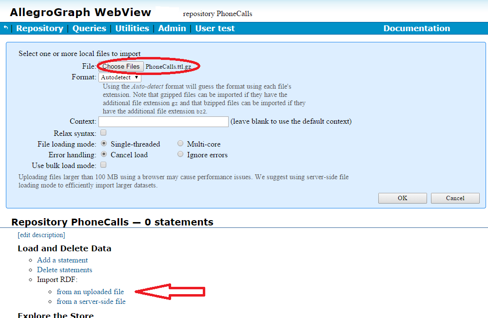

Introduction
This document is a practical tutorial and contains a complete example using the N-dimensional geospatial (abbreviated to nD geospatial or simply nD) facility. This document starts with a discussion of some of the tools which help with using the facility: the WebView Geospatial Datatype Designer, nD Geospatial Automation, and the relevant SPARQL magic properties.
The document N-dimensional Geospatial Overview gives an overview of the facility and the ideas behind it. Readers are encouraged to read that document before this one.
The WebView Geospatial Datatype Designer
The Webview Geospatial Datatype Designer is an interactive design tool integrated into WebView. Visit WebView in a browser (e.g, http://localhost:10035 if the browser is running on the same machine as AllegroGraph and it is using the default port setting), click the Utilities menu, and select Geospatial Datatype Designer. To explore the designer, click the try it button for Spherical Earth Coordinates.

Figure T-01: The designer in WebView
This will populate the ordinate fields and create and display a useful nD type for latitude-longitude-time encoding. The generated geospatial type string will appear in the upper box.
Figure T-02: Latitude-Longitude-Time
While this tool interacts with the AllegroGraph server, it never affects the state of the server or any repository on it. The sole purpose of the tool is to derive the type specifier URI for an nD encoding. Once obtained, that type string can be copied and pasted where needed to create geospatial data.
The resolution fields display the requested resolution (entered by the user) and the actual resolution. The actual resolution will differ from the requested because the data must be encoded into 80 bits, which may not be sufficient to encode the requested resolution or may allow encoding a better-than-requested (i.e. finer) resolution.
Each line defines an ordinate. The ordinates can be reordered using the arrow keys. The strip width must be defined for each ordinate except the last.
Important caution: Even though the type specification can be deciphered, it is not possible for a user to create an nD type URI from scratch. The nD system reconstructs the specifications of the several ordinates from the string, and complains if that parse creates an encoding that does not produce the exact same type string, The round trip between nD definition and the type string must be stable otherwise nD encoding/decoding round trip will be incorrect.
Every geospatial encoding is uniquely identified by its nD type URI which also serves as its (pseudo) XSD type. The encoding can be reconstructed when needed from that resource string. That means that externalized geospatial typed-literal data with that type can be loaded into a different store without advance preparation by the DBA. Here is an example resource for a four-dimensional encoding that encodes latitude and longitude over the entire earth's surface, altitude up to 70,000 feet, and time within the 2014 calendar year (it should be all on one line but we have broken it into four lines so it will display in some browsers):
<http://franz.com/ns/allegrograph/5.0/geo/nd#
_longitude_lo_-1.8+2_+1.8+2_+1.-4_+1.-1
_latitude_la_-9.+1_+9.+1_+1.-4_+1.-1_time_ti_+3.5976+9
_+3.6291+9_+1.+0_+3.6+3_altitude_d_+0.+0_+7.+4_+2.+2>
Unlike xsd:float, which denotes just one encoding, the set of possible nD geospatial subtypes is essentially unbounded. The number of ordinates, their names, their minima and maxima, their desired resolution, and their strip size, must all be specified by the DBA during repository setup. It is possible to do this programmatically, but this is usually an awkward way to achieve the desired datatype implementation. Since a geospatial encoding has only 80 binary bits to contain the ordinate values of a UPI datum, allocating that resolution to the several ordinates is usually interactive process. The DBA requests an nD datatype with certain desired resolutions on each ordinate. AllegroGraph internally constructs this type and determines how the 80 bits can be allocated to achieve the desired ranges and resolution. AllegroGraph nD ordinates use fractional bits (see below for an explation of fractional bits). If more or less resolution is available, AllegroGraph distributes the excess or deficit over the several ordinates, and can report the result to the DBA in the Webview Geospatial Designer. The DBA may then modify the original request to better fit the specific needs.
The Webview Geospatial Datatype Designer facilitates exploring and designing geospatial encoding. This tool is the recommended way to obtain the necessary RDF type resource to be used in a triple store.
The controls on the Designer allow specifying the ordinate type, maximum value, minimum value, and resolution. The Actual box displays the actual resolution when the type is constructed (which may be finer or coarser than the requested resolution). The strip width can be specified for each ordinate but the last. (Recall that strips divide the nD space into prisms with one fewer dimension than the number of ordinates so the least significant ordinate spans its entire range without strips.) Every time a cell is changed, the nD encoding will be recomputed by the server and the generated type string will be replaced unless the ordinate matrix is inconsistent or incorrect, in which case an error will be reported.
It is also possible to copy an nD type string from elsewhere and paste it into the type string box. This will parse the type string and populate the matrix of ordinate specifications. This allows the user to examine an existing encoding, and more importantly, to start with an existing encoding and then modify it interactively. Some useful modifications would be making a different ordinate the last (and so the free variable of strips), changing a strip width, or altering a requested resolution.
The strip width, specified for all ordinates but the last, is in the same units as the minimum, maximum, and requested resolution for an ordinate. The nD system doesn't care about units -- they are implicit in the data -- except for spherical coordinates (degrees) and time (seconds). If an ordinate represents temperature, the nD system needs to know the minimum, maximum, resolution, and strip width, but it doesn't need to know whether temperature is in C, F, or K units. Similarly for Cartesian ordinates -- the units are implicit. Spherical coordinates have specific units because it is necessary to do haversine computations (trigonometry) on them, and the nD system tries to present and ingest spherical and time ordinates in human-readable syntax when it can.
Why actual resolution differs from requested
The columns for requested and actual resolution in the nD geo designer need explanation. Defining an ordinate with a given minimum, maximum, and requested resolution means requesting that ordinate to have (max - min)/resolution discrete values. An nD part has 80 bits available for data. Multiplying together the number of discrete values of each of the ordinates produces the number of distinct n-tuple values that the nD type needs to represent. That number might require more or less than 80 bits. If less than 80 bits are required, the type distributes the extra available resolution proportionally across all the ordinates. If more than 80 bits are required, the deficit is similarly distributed. The requested and actual resolution columns show this adjustment. (For reasons of computation efficiency, a datatype generally uses a fraction of a bit less than 80 bits.)
Here is what we mean by fractional bits: suppose ordinate1 has values from 1 to 10 with resolution 1, and ordinate2 has values from 1 to 12 also with resolution 1. So ordinate1 can have 10 possible values, and ordinate2 12. That makes 120 possible pairs. Both 10 and 12 require 4 bits to encode but 120 requires only 7, not 8. The nD system takes advantage of this, and so effectively allocates (ceiling (log2 120)) = 7 bits to the combination because it encodes the pairs, not the individual ordinates.
nD Geospatial Automation
This document has explained why it is necessary to perform some design and setup in order to use the AllegroGraph geospatial facilities. A geospatial datatype must be created before data can be encoded using it. There is no way to avoid this step.
However, if you are ingesting geospatial data externalized from some other AllegroGraph repository then AllegroGraph's geospatial automation will reconstruct the geospatial datatype and set up the requisite type mappings for you.
When automation is enabled and a triple with a typed-literal object is ingested (e.g. via a N-triples file or a SPARQL INSERT or an add triple call from one of the clients), the loader will check whether the leading portion of the type URI matches an AllegroGraph geospatial type. (Both the older 2D and newer nD types are checked.) If so, and if the type has not yet been encountered in this store, the datatype is reconstructed from the type string and automatic predicate and datatype mappings are added to the store. This lets the triple's object be encoded for fast geospatial search and ensures that all subsequent triples are likewise encoded (for the given predicate). In addition, nD geospatial proximity queries such as the SPARQL magic predicate nd:inCircle use the predicate mapping to determine the specific nD datatype involved in the query.
Note that automation requires and assumes that the application will obey certain conventions concerning automatic mappings. In particular, any geospatial objects for a given predicate must all share the same datatype.
1 If they do not, then AllegroGraph will raise an error. For example, if you first added a triple with predicate <http://example.org#location> and an nD datatype that encoded X, Y, and Z coordinates and then tried to add a second triple with the same predicate but only X and Y coordinates, AllegroGraph will signal this error:
Importing failed:
MALFORMED DATA: Attempt to replace a geospatial predicate mapping for <http://example.org#location>
using the automatic geospatial mapping facility.
The existing subtype was
<http://franz.com/ns/allegrograph/5.0/geo/nd#_X_ca_+0.+0_+1.+2_+1.-4_+1.-1_Y_ca_+0.+0_+1.+2_+1.-4_+1.-1_Z_ca_+0.+0_+1.+2_+1.-4>
and the new one would have been
<http://franz.com/ns/allegrograph/5.0/geo/nd#_X_ca_+0.+0_+1.+2_+1.-4_+1.-1_Y_ca_+0.+0_+1.+2_+1.-4>
If you have an existing application that violates this requirement, you can disable automation. This can be done in AGWebView on the Overview page for the repository (by checking the Recognize geospatial datatypes automatically box in the Store Control section of the Repository Overview Page). It may also be enabled using the Lisp API (see automate-nd-datatype-mappings) or with HTTP (see geospatialDatatypeAutomation). Automation is on by default for new repositories.
SPARQL magic properties for nD Geospatial
The SPARQL magic properties for nD geospatial are listed here in SPARQL Magic Properties, under the heading N-dimensional Geospatial. There is a brief note about the nD geospatial magic properties earlier in that document. Note there are also 2-d geospatial magic properties. These do not apply to nD geospatial.
Example and tutorial: A call location example
This section will create a small repository containing nD geospatial data and show how to make queries. These examples will use WebView, with SPARQL as the query language.
We have a file of cell phone data, PhoneCalls.ttl.gz, available in the tutorial/ subdirectory of the AllegroGraph server installation (see the tutorial directory section in AllegroGraph Quick Start). It contains 20,000 records. The records are about cell phone events, and include:
- The call originator number
- The call target (receiver) number
- The orginator location (including time of call)
- The target location (including time of call)
(The time, encoded in both the originator location and the target location, is the same or very close to the same in each. Time appears twice because the data from each phone includes it.)
Here are some triples from the file associated with a single call:
_:b9DDDC57Bx74 <http://phonecalls.com/phone-calls#phoneCallTargetLocation> "+37.76943583298422-122.45554363915655^2014-08-18T22:13:00,99935913Z"^^<http://franz.com/ns/allegrograph/4.0/geo/nd#_longitude_lo_-1.23+2_-1.22+2_+1.-5_+1.-3_latitude_la_+3.7+1_+3.8+1_+1.-5_+1.-3_time_ti_+3.5975+9_+3.6291+9_+1.+0>
_:b9DDDC57Bx74 <http://phonecalls.com/phone-calls#phoneCallOriginLocation> "+37.788757296466976-122.39161695293953^2014-08-18T22:13:00,99935913Z"^^<http://franz.com/ns/allegrograph/4.0/geo/nd#_longitude_lo_-1.23+2_-1.22+2_+1.-5_+1.-3_latitude_la_+3.7+1_+3.8+1_+1.-5_+1.-3_time_ti_+3.5975+9_+3.6291+9_+1.+0>
_:b9DDDC57Bx74 <http://phonecalls.com/phone-calls#phoneCallReceiver> "(555)828-5954"
_:b9DDDC57Bx74 <http://phonecalls.com/phone-calls#phoneCallOriginator> "(555)219-9578"
_:b9DDDC57Bx74 is the label of the call event. It is the subject of each triple associated with the event. The object for the predicates phoneCallReceiver and phoneCallOriginator are strings naming phone numbers (like "(555)219-9578").
The object of the location triples, with predicates <http://phonecalls.com/phone-calls#phoneCallOriginLocation> and `http://phonecalls.com/phone-calls#phoneCallTargetLocation, looks like:
"+37.788757296466976-122.39161695293953^2014-08-18T22:13:00,99935913Z"^^<http://franz.com/ns/allegrograph/4.0/geo/nd#_longitude_lo_-1.23+2_-1.22+2_+1.-5_+1.-3_latitude_la_+3.7+1_+3.8+1_+1.-5_+1.-3_time_ti_+3.5975+9_+3.6291+9_+1.+0> This is the datatype:
<http://franz.com/ns/allegrograph/4.0/geo/nd#_longitude_lo_-1.23+2_-1.22+2_+1.-5_+1.-3_latitude_la_+3.7+1_+3.8+1_+1.-5_+1.-3_time_ti_+3.5975+9_+3.6291+9_+1.+0> It defines how the location and time information is encoded. We will discuss below how to set up this type, but for now consider it a given. When the recognizing geospatial datatypes automatically feature is enabled, the type (if not already known about) will be constructed automatically (see above).
Visit WebView in a browser as was done previously to try out the Geospatial Datatype Designer tool. Under Repositories, create a new repository named "PhoneCalls".
Figure T-03: WebView page for the PhoneCalls repositories
Once the newly created store is available, click on its name, and that repository's control page will open. Click on the Recognize geospatial datatypes automatically checkbox to enable geospatial automation.
The next step is to load the phone location geospatial data. Load it from either client or server machine. (See Load and delete data in the WebView document. Or see agload.) In the figure, we have clicked on Import RDF/from an uploaded file (indicated by the arrow) chosen the file PhoneCalles.ttl.gz, as shown on the File: line near the top.

Figure T-04: Loading n-triples
At this point the data can be queried. We will use SPARQL to perform a query to find all phone calls within a fifteen-minute interval that originated or terminated within a 500 meter radius in San Francisco. Click on the Query menu and select New. Then paste this query text in the query box and click Execute.
PREFIX xsd: <http://www.w3.org/2001/XMLSchema#>
PREFIX phone: <http://phonecalls.com/phone-calls#>
PREFIX nd: <http://franz.com/ns/allegrograph/5.0/geo/nd#>
PREFIX : <http://franz.com/ns/keyword#>
SELECT ?from ?direction ?to {
{ ?phonecall nd:inCircle (phone:targetLocation
:latitude +37.756 :longitude -122.415
:units :km :radius 0.5
:time-min '2014-08-18T15:20:00Z'^^xsd:dateTime
:time-max '2014-08-18T15:35:00Z'^^xsd:dateTime) .
BIND('to' as ?direction)
} UNION {
?phonecall nd:inCircle (phone:originLocation
:latitude +37.756 :longitude -122.415
:units :km :radius 0.5
:time-min '2014-08-18T15:20:00Z'^^xsd:dateTime
:time-max '2014-08-18T15:35:00Z'^^xsd:dateTime)
BIND('from' as ?direction)
}
?phonecall phone:Originator ?from .
?phonecall phone:Receiver ?to .
} If you get the following error message, it means you forgot to toggle the Recognize geospatial datatypes automatically checkbox:
Delete the repository, recreate it, toggle the switch to on, and load again. If all works, the result looks like:
Figure T-05: inRadius query result
Here is a similar query for calls received within a bounding box:
PREFIX xsd: <http://www.w3.org/2001/XMLSchema#>
PREFIX phone: <http://phonecalls.com/phone-calls#>
PREFIX nd: <http://franz.com/ns/allegrograph/5.0/geo/nd#>
PREFIX : <http://franz.com/ns/keyword#>
SELECT ?from ?to {
{ ?phonecall nd:inBoundingBox (phone:targetLocation
:latitude-min +37.745 :latitude-max +37.765
:longitude-min -122.435 :longitude-max -122.405
:time-min '2014-08-18T15:20:00Z'^^xsd:dateTime
:time-max '2014-08-18T15:35:00Z'^^xsd:dateTime) .
}
?phonecall phone:Originator ?from .
?phonecall phone:Receiver ?to .
}

Figure T-06: inBoundingBox query result
The following shows how to extract an individual ordinate value from an nD-encoded triple object.
PREFIX xsd: <http://www.w3.org/2001/XMLSchema#>
PREFIX phone: <http://phonecalls.com/phone-calls#>
PREFIX nd: <http://franz.com/ns/allegrograph/5.0/geo/nd#>
PREFIX ndfn: <http://franz.com/ns/allegrograph/5.0/geo/nd/fn#>
PREFIX : <http://franz.com/ns/keyword#>
SELECT ?from ?to ?time {
{ ?phonecall nd:inBoundingBox (phone:targetLocation
:latitude-min +37.745 :latitude-max +37.765
:longitude-min -122.435 :longitude-max -122.405
:time-min '2014-08-18T15:20:00Z'^^xsd:dateTime
:time-max '2014-08-18T15:35:00Z'^^xsd:dateTime) }
?phonecall phone:Originator ?from ;
phone:Receiver ?to ;
phone:targetLocation ?o .
bind(ndfn:ordinateValue(?o, :time) as ?time)
}
Figure T-07: Ordinate Value
Footnotes
- A predicate may have objects with varying non-geospatial datatypes as these are ignored during geospatial queries ↩